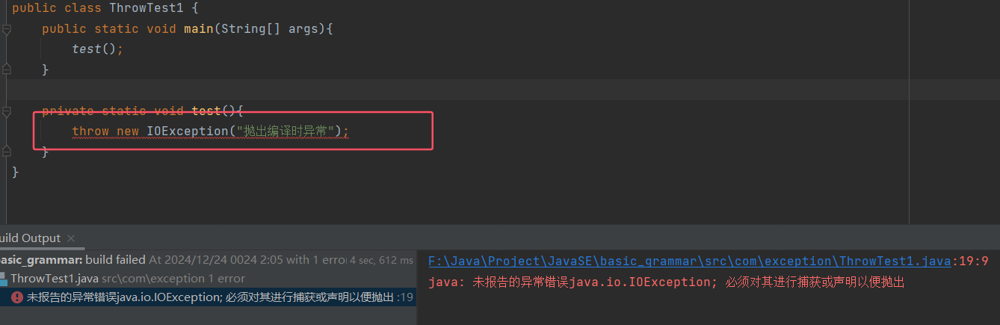
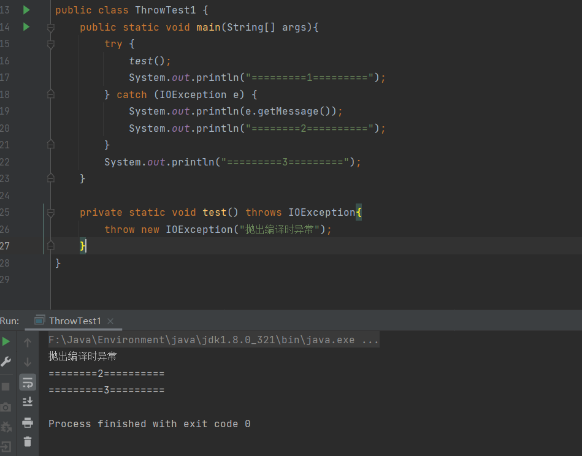
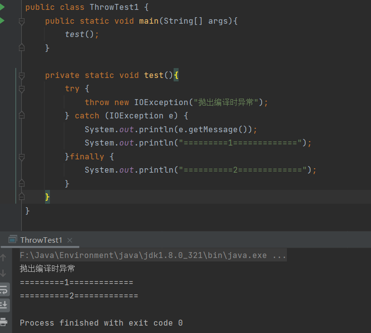

1.java三大版本
Java SE (Standard Edition)：这是Java的标准版，提供了基本的类库和语言特性，适用于桌面应用程序和企业级应用程序开发
Java EE (Enterprise Edition)：这是Java的企业版，提供了企业级应用所需的完整的服务器端平台，如JNDI、EJB、JMS、JTA等，现在被更新的Java EE版本取代，即Java EE的“微服务”版本
Java ME (Micro Edition)：这是Java的微型版，主要用于嵌入式设备和移动设备应用程序，但已经在2011年被Oracle宣布不再支持，并在2014年完全移除
2.java特性和优势
- 简单性
- 面向对象
- 可移植性
- 高性能
- 分布式
- 动态性
- 多线程
- 安全性
- 健壮性
3.JDK、JRE、JVM
- JDK：Java Development Kit
- JRE：Java Runtime Environment
- JVM：Java Virtual Machine
4.HelloWorld
1 | public class hello { |
1 | javac hello.java -encoding utf-8 |
5.编译型和解释型
java程序运行机制
graph LR
A["源文件\n(*.java文件)"] --> B[("java编译器")] --> C>"*.class文件"] --> D[("类装载器")] --> E[("字节码校验器")]
--> F[("解释器")] --> G[["操作系统平台"]]
6.java基础语法
6.1 注释
单行注释
1 | //单行注释 |
多行注释
1 | /* |
文档注释
1 | /** |
6.2 标识符和关键字
关键字
| 关键字 | 所属含义 |
|---|---|
| abstract | 表明类或者成员方法具有抽象属性 |
| assert | 断言，用来进行程序调试 |
| boolean | 基本数据类型之一，声明布尔类型的关键字 |
| break | 提前跳出一个块 |
| byte | 基本数据类型之一，字节类型 |
| case | 用在 switch 语句之中，表示其中的一个分支 |
| catch | 用在异常处理中，用来捕捉异常 |
| char | 基本数据类型之一，字符类型 |
| class | 声明一个类 |
| const | 保留关键字，没有具体含义 |
| continue | 回到一个块的开始处 |
| default | 默认，例如，用在 switch 语句中，表明一个默认的分支 |
| do | 用在 do-while 循环结构中 |
| double | 基本数据类型之一，双精度浮点数类型 |
| else | 用在条件语句中，表明当条件不成立时的分支 |
| enum | 枚举 |
| extends | 表明一个类型是另一个类型的子类型，表示继承关系，这里常见的类型有类和接口 |
| final | 表示不可变，最终的，在Java中表示常量 |
| finally | 用于处理异常情况，用来声明一个基本肯定会被执行到的语句块 |
| float | 基本数据类型之一，单精度浮点数类型 |
| for | 一种循环结构的引导词 |
| if | 条件语句的引导词 |
| goto | 保留关键字，没有具体含义 |
| implements | 表明一个类实现了给定的接口 |
| import | 表明要访问指定的类或包 |
| instanceof | 用来测试一个对象是否是指定类型的实例对象 |
| int | 基本数据类型之一，整数类型 |
| interface | 接口 |
| long | 基本数据类型之一，长整数类型 |
| native | 用来声明一个方法是由与计算机相关的语言（如 C/C++语言）实现的 |
| new | 用来创建新实例对象 |
| package | 包 |
| private | 一种访问控制方式：私用模式 |
| protected | 一种访问控制方式：保护模式 |
| public | 一种访问控制方式：共用模式 |
| return | 从成员方法中返回数据 |
| short | 基本数据类型之一,短整数类型 |
| static | 表明具有静态属性 |
| strictfp | 用来声明 FP_strict（单精度或双精度浮点数）表达式遵循IEEE 754 算术规范 |
| super | 表明当前对象的父类型的引用或者父类型的构造方法 |
| switch | 分支语句结构的引导词 |
| synchronized | 表明一段代码需要同步执行 |
| this | 指向当前实例对象的引用 |
| throw | 抛出一个异常 |
| throws | 声明在当前定义的成员方法中所有需要抛出的异常 |
| transient | 声明不用序列化的成员域 |
| try | 尝试一个可能抛出异常的程序块 |
| void | 声明当前成员方法没有返回值 |
| volatile | 表明两个或者多个变量必须同步地发生变化 |
| while | 用在循环结构中 |
| null | 引用数据类型默认初始值 |
标识符
- 标识符：类名、方法名、变量名
- 以大小写字母、$或者下划线（_）开始
- 首字符之后可以是大小写字母、$、_或者数字的任何字符组合
- 不能使用关键字
- 标识符大小写敏感
- 注意：可以使用中文命名，但不建议使用
6.3 数据类型
强类型语言
弱类型语言
java的数据类型分为2类：
- 基本类型
- 引用类型
graph TD A["JAVA数据类型"] --> B1["基本数据类型"] B1["基本数据类型"] --> C1["数值类型"] C1["数值类型"] --> D1["整数类型"] D1["整数类型"] --> E1["byte--1字节"] D1["整数类型"] --> E2["short--2字节"] D1["整数类型"] --> E3["int--4字节"] D1["整数类型"] --> E4["long--8字节"] C1["数值类型"] --> D2["浮点类型"] D2["浮点类型"] --> E5["float--4字节"] D2["浮点类型"] --> E6["double--8字节"] C1["数值类型"] --> D4["字符类型"] --> E7["char--2字节"] B1["基本数据类型"] --> C2["布尔类型"] --> D3["占1位，其值只有true和false"] A["JAVA数据类型"] --> B2["引用数据类型"] B2["引用数据类型"] --> C3["类"] B2["引用数据类型"] --> C4["接口"] B2["引用数据类型"] --> C5["数组"]
1 | String a="中国"; |
6.4 拓展
1.字节
- 位(bit)：计算机内部存储最小的单位
- 字节(byte)：计算机中数据处理的基本单位，习惯上使用B表示字节
- 1B(byte，字节) = 8bit(位)
- 字符：计算机使用的字母、数字、字和符号
- 1024B=1KB，1024KB=1M，1024M=1G
2.数据类型扩展
整数拓展： 进制 二进制 十进制 八进制 十六进制
1
2
3
4
5
6
7
8int i = 10;
int i1 = 010;//八进制
int i2 = 0x10;//十六进制
int i3 = 0b1011;//二进制
System.out.println(i);
System.out.println(i1);
System.out.println(i2);
System.out.println(i3);浮点数拓展： 银行业务怎么表示？钱
- 最好避免使用完全浮点数进行比较(精度缺失)
1
2
3
4
5
6
7
8
9
10
11
12//float 有限 离散 舍入误差 大约 接近但是不等于
//double
//最好避免使用完全浮点数进行比较
float f = 0.1f;//0.1
double d = 1.0 / 10;//0.1
System.out.println(f == d);//false
System.out.println(f);
System.out.println(d);
float d1 = 2323232334424f;
float d2 = d1 + 1;
System.out.println(d1 == d2);//true字符拓展：所有的字符本质还是数字
1
2
3
4
5
6
7
8
9
10
11
12
13
14//==============================
//字符拓展
//==============================
char c1 = 'a';
char c2 = '中';
System.out.println(c1);
System.out.println((int) c1);//强制转换
System.out.println(c2);
System.out.println((int) c2);//强制转换
//所有的字符本质还是数字
//编码 Unicode 表（97=a,65=A） 2字节 65536 Excel 2**16=65536
//u0000 UFFFF
char c3 = '\u0061';
System.out.println(c3);//a布尔值拓展
1
2
3
4boolean flag = true;
if (flag == true) {
}
if (flag) { }转义字符
1
System.out.println("hello\nworld");
6.5 类型转换
Java是强类型语言，所以进行运算的时候，可能需要类型转换
graph LR A(("低"))-.->byte,short,char --> int --> long --> float --> double -.-> B(("高"))运算中，不同类型的数据先转换为同一类型，然后进行运算
强制类型转换：高–>低
1 | int i=128; |
- 注意点
- 不能对布尔值进行转换
- 不能把对对象类型转换为不相干的类型
- 把高容量转换到低容量的时候，强制转换
- 转换的时候可能存在内存溢出，或者精度问题
扩展
1 | package com.yang.base; |
6.6 变量、常量、作用域
6.6.1 变量
Java是一种强类型语言，每个变量都必须声明类型
Java变量是程序中最基本的存储单元，其要素包括变量名、变量类型和作用域
1
2type varName [=value] [{,varName[-value]}]
//数据类型 变量名 = 值;可以使用逗号隔开来声明多个同类型变量注意事项：
- 每个变量都有类型，类型可以是基本类型，也可以是引用类型
- 变量名必须是合法的标识符
- 变量声明是一条完整的语句，因此每一个声明都必须以分号结束
1 | //int a,b,c; |
- 命名规范：
- 所有变量、方法、类名：见名之意
- 类成员变量：首字母小写和驼峰原则
- 局部变量：首字母小写和驼峰原则
- 常量：大写字母和下划线
- 类名：首字母大写和驼峰原则
- 方法名：首字母小写和驼峰原则
6.6.2 作用域
- 类变量：static修饰
- 实例变量：从属于对象，如果不进行初始化，则默认值，0，0.0，null,false
- 局部变量：方法内，必须声明和初始化值
1 | public class Demo6 { |
6.6.3 常量
常量：初始化后不能再改变值
常量名一般使用大写字符
1
2final 常量名 = 值;
final double PI = 3.14；
1 | public class Demo7 { |
6.7 运算符
6.7.1 算术运算符
+，-，*，/，%，++，–
算数运算符操作数必须是数值类型
分为一元运算符和二元运算符
一元运算符，只有一个操作数
二元运算符有两个操作数，运算符在两个操作数之间
- 当二元运算的两个操作数的数据类型不同时，运算结果的数据类型和参与运算的操作数的数据类型中精度较高(或位数较长)一致
- 低精度到高精度会自动转换，而高精度到低精度则要类型强制转换
1 | public class Demo { |
- 一元运算符：++，–
- ”++“和”–“运算符，只允许用于数值类型的变量，不允许用于表达式中
- “++”和”–“可以用于数值变量之前或者之后
6.7.2 关系运算符
- >，<，>=，<=，==，!=，instanceof
1 | public class Demo { |
6.7.3 逻辑运算符
- &&，||，!
1 | //逻辑运算符 |
6.7.4 位运算符
- &，|，^，~，>>，<<，>>>
1 | public class Demo { |
6.7.5 条件运算符
- ? :
1 | public class Demo8 { |
6.7.6 扩展赋值运算符和赋值运算符
- 扩展赋值运算符：+=，-=，*=，/=
- 赋值运算符：=
6.8 包机制
语法格式
1 | package pk1[.pk2[.pk3...]] |
一般利用公司域名倒置作为包名
为了能够使用一个包的成员，需要在Java程序中明确导入该包
使用“import”语句可以完成此功能
1 | import package1[.pk2[.pk3...]] |
- 注意快捷键 Alt + enter 自动指出错误
- 注意善用*号通配符
6.9 JavaDoc生成文档
- javadoc命令是用来生成自己的API文档的
- 参数信息
1 | @author 作者名 |
1.命令行生成API文件
在cmd中键入
1
javadoc -encoding utf8 charset utf8 xxx.java
参数是用utf-8编码，用utf-8字符集，尽量显示中文
2.IDEA中菜单tools下点选generate JavaDoc生成
7.流程控制
7.1 Scanner类
java工具包中提供Scanner类，实现程序和人交互
java.util.Scanner是java5新特征
基本语法
1
Scanner s = new Scanner(System.in)
通过Scanner类的hasNext()与hasNextLine()方法判断是否还有输入的数据
通过Scanner类的next()与nextLine()方法获取输入的字符串
1 | import java.util.Scanner; |
1 | import java.util.Scanner; |
1 | import java.util.Scanner; |
1 | import java.util.Scanner; |
7.2 顺序结构
- java的基本结构就是顺序结构，除非特别指明，否则就按照顺序一句一句执行
graph TD A["A"]-->B["B"]-->C["C"]
7.3 选择解构
1.if选择
1 | if(布尔表达式){ |
1 | import java.util.Scanner; |
2.if双选择结构
1 | if(布尔表达式){ |
1 | import java.util.Scanner; |
3.if多选择结构
1 | if(布尔表达式1){ |
1 | import java.util.Scanner; |
4.switch选择
- switch语句中的变量类型：byte、short、int、char
- 从java7开始：switch支持String类型
- case标签必须为字符串常量或字面量
1 | switch(expression){ |
1 | public class Demo { |
7.4 循环结构
1.while循环
1 | while(布尔表达式){ |
1 | public class Demo { |
1 | public class Demo { |
1 | public class Demo { |
2.do…while循环
- 至少会执行一次
1 | do{ |
1 | public class Demo { |
3.for循环
1 | for(初始化;布尔表达式;更新){ |
1 | public class Demo { |
1 | public class Demo { |
1 | public class Demo { |
1 | public class Demo { |
1 | public class Demo { |
4.增强for循环
1 | for(声明语句:表达式){ |
1 | public class Demo { |
5.break、continue、goto
- break：在任何循环语句的主体部分，均可使用break控制循环的流程；强行退出循环，不执行循环中剩余的语句
- continue：用于终止某次循环过程，即跳过循环体中尚未执行的语句，接着进行下一次是否执行循环的判断
- goto：暂无使用
8.方法
8.1 什么是方法
java方法是语句的集合，实现某一个功能，即是一个功能块
方法设计原则：最好是原子性，即一个方法只实现一个功能
1
2
3
4
5
6
7
8
9
10
11
12
13
14
15
16
17
18
19
20
21
22
23
24
25public class Demo {
//方法
public static void main(String[] args) {
int sum=add(1,2);
System.out.println(sum);
test();
}
//加法
public static int add(int a,int b){
return a+b;
}
//1000以内可以被5整除的数，3个一行
public static void test(){
for (int i = 0; i <= 1000; i++) {
if(i%5==0){
System.out.print(i+"\t");
}
if(i%15==0){
System.out.println();
}
}
}
}方法的类型
- 无返回值无参数的方法：执行后不返回任何值，也不需要任何参数
- 有返回值无参数的方法：执行后会返回一个值，但不需要任何参数
- 无返回值有参数的方法：执行后不返回任何值，但需要一个或多个参数
- 有返回值有参数的方法：执行后会返回一个值，同时也需要一个或多个参数
在Java中，方法既可以属于类，也可以属于对象。这主要取决于方法是否使用了
static关键字进行修饰类方法（静态方法）
- 定义：使用
static关键字修饰的方法称为类方法或静态方法。它们属于类本身，而不属于类的任何特定实例 - 调用方式：类方法可以直接通过类名调用，也可以通过类的实例调用，但不推荐后者，因为它可能会引起混淆
- 访问权限：类方法只能直接访问类中的静态成员（静态变量和静态方法），不能直接访问非静态成员（实例变量和实例方法）
- 内存分配和生命周期：类方法在类加载时就被分配内存空间，其生命周期与类相同
- 关键字this和super的使用：不能使用
this关键字，因为this代表当前实例，而静态方法不属于任何实例；也不能使用super关键字，因为super代表父类实例，而静态方法不属于任何实例
- 定义：使用
对象方法（实例方法）
- 定义：没有使用
static关键字修饰的方法称为对象方法或实例方法。它们属于类的实例，与特定的对象相关联 - 调用方式：对象方法必须通过类的实例来调用
- 访问权限：对象方法可以直接访问类中的静态成员和非静态成员
- 内存分配和生命周期：对象方法在创建类的实例时才会被分配内存空间，当实例被销毁时，实例方法占用的内存空间也会被释放
- 关键字this和super的使用：可以使用
this关键字来引用当前实例；可以使用super关键字来引用父类实例
- 定义：没有使用
8.2 方法的定义和调用
8.2.1 定义
1 | 修饰符 返回值类型 方法名(参数类型 参数名){ |
修饰符：可选，告诉编译器如何调用该方法，例如public、private、protected等返回值类型：方法完成后返回的值的类型。如果方法不返回任何值，则返回值类型为void方法名：方法的名字，必须遵循命名约定参数类型和参数名：调用方法时传递给它的值称为参数，参数是可选的，方法可以不包含任何参数方法体：方法体包含了执行的代码，完成具体的工作return：用来返回值，结束方法的执行
1 | public class demo { |
break 和 return 的区别
break：跳出switch，结束循环return：结束方法，返回一个结果，可以是空值: return；
8.2.2 调用
- 静态方法
- 非静态方法
- 形参和实参
- 值传递和引用传递
- 调用方法：对象名.方法名(实参列表)、类名.方法名(实参列表)
8.2.2.1 静态方法与非静态方法
1 | //学生类 |
1.静态方法可以直接被调用，类名.方法名(实参列表)
2.非静态方法需要实例化类，生成对象，通过对象.方法名(实参列表)
3.静态方法和类一起加载，但是非静态方法只有在类实例化之后才存在，所有静态方法不能直接调用非静态方法
4.非静态方法可以直接调用非静态方法和静态方法；静态方法不能直接调用非静态方法，但是可以直接调用静态方法
8.2.2.2 形参和实参
- 实参：方法调用时传递的实际值或变量，实参的值会被传递给方法中的形参，以供方法执行时使用
- 形参：定义方法时声明的参数，用于接收调用方法时传递的实际值，在方法体内作为局部变量使用，用于执行方法的功能
1 | public class demo { |
- 对应关系：实参和形参在数量、类型和顺序上必须匹配。调用方法时，实参的值会按顺序赋给形参
- 值传递：Java中的参数传递是值传递，即实参的值被复制给形参
- 对于基本数据类型，传递的是值的副本
- 对于引用数据类型，传递的是对象引用的副本
- 注意事项
- 类型匹配：实参的类型必须与形参的类型兼容，否则编译器会报错
- 数量匹配：调用方法时传递的实参数量必须与方法定义时的形参数量一致
- 顺序匹配：实参的传递顺序必须与形参的声明顺序一致
8.2.2.3 值传递和引用传递
- 值传递：是指在调用方法时，将实际参数的值复制一份传递给形式参数，形式参数的改变不会影响到实际参数
- 在 Java 中，8大基本数据类型的参数传递采用的是值传递
1 | //值传递 |
引用传递：是指在调用方法时，将实际参数的引用（内存地址）传递给形式参数，形式参数的改变会影响到实际参数
在 Java 中，引用类型（自定义类、数组等）的参数传递采用的是引用传递
1
2
3
4
5
6
7
8
9
10
11
12
13
14
15
16
17public class demo {
public static void main(String[] args) {
//引用传递：对象，本质还是值传递
Person person=new Person();
System.out.println(person.name);//null
//传递的是person对象的地址(在new对象的时候,person在栈中存放了指向堆中对象的地址)
demo.change(person);
System.out.println(person.name);//yang
}
public static void change(Person person){
person.name="yang";
}
}
//定义一个Person类，有一个属性：name
class Person{
String name;//null
}虽然 Java 中对象类型的参数传递采用的是引用传递，但实际上这个引用本身也是通过值传递的方式传递给方法的。如果在方法内部改变引用的指向，实际参数的引用不会受到影响
1
2
3
4
5
6
7
8
9
10public static void main(String[] args) {
int[] arr = {1, 2, 3};
changeReference(arr);
System.out.println(Arrays.toString(arr)); // 输出：[1, 2, 3]
}
public static void changeReference(int[] array) {
// 方法内部改变了 array 的引用
array = new int[]{4, 5, 6};
}
8.3 方法重载
- 重载就是在同一个类中，有相同的函数名称，但参数列表不同的函数
- 方法重载的规则
- 方法名称必须相同
- 参数列表必须不同（个数不同、类型不同、参数排列顺序不同）
- 方法重载与返回值类型无关：方法的返回值类型可以相同也可以不相同
1 | public class Demo { |
8.4 命令行传参
main方法的参数是一个字符串数组（String[]），通常命名为args，这个数组包含了从命令行传递给程序的所有参数1
2
3
4
5
6
7
8public class CommandLineArgs {
public static void main(String[] args) {
//args.length 数组长度
for(int i=0;i<args.length;i++){
System.out.println(args[i]);
}
}
}将Java程序编译成字节码文件（
.class文件），在命令行中，使用javac命令进行编译1
javac CommandLineArgs.java
运行编译后的Java程序，并通过命令行传递参数。在命令行中，使用
java命令运行程序，并在类名后面添加参数。参数之间用空格分隔1
java CommandLineArgs 鲁 班 七 号
如果CommandLineArgs.java文件中存在包名，删除包名或者运行时加上包名（在
src目录下，执行命令）
8.5 可变参数
- JDK1.5开始，java支持传递同类型的可变参数给一个方法
- 在方法声明中，在指定参数类型后加一个省略号(…)
- 一个方法只能指定一个可变参数，必须是最后一个参数，任何普通的参数必须在它之前声明
- 在方法内部，可变参数被当作数组处理
1 | public class Demo4 { |
1 | public class VarargsWithGenerics { |
8.6 递归
- 递归：一个方法直接或间接地调用自身
- 递归方法的关键在于找到终止条件，以防止无限递归
1 | public class Demo { |
1 | public class Demo { |
9.数组
9.1 数组的定义
- 数组是固定大小且相同类型数据的有序集合
- 其中，每一个数据称作一个 数组元素，每个数组元素可以通过一个下标来访问它们
9.2 数组的声明和创建
1.声明数组变量
1 | dataType[] arrayName;//推荐 |
2.创建数组
- 声明数组后，需要创建数组对象并分配内存空间
1 | dataType[] arrayVar = new dataType[arraySize]; |
1 | int[] nums;//声明一个数组，没有分配空间 |
- 只有创建数组时才分配内存空间，声明并没有
- 1.声明时，只是在栈中创建一个变量为null
- 2.new 创建时，在堆中开辟出数组对应的存储空间，且栈中的变量存储数组在堆的地址
3.数组三种初始化
创建并初始化数组
1
2
3
4
5
6//静态初始化
int[] a = {1,2,3};
Student[] stu = {new Student(1,2),new Student(2,3)};
//动态初始化
int[] arr = new int[]{1,2,3};创建数组后单独初始化元素
1
2
3int[] a = new int[2];
int[0] = 1;
int[1] = 2;默认初始化
- 数组是引用类型，它的元素相当于类的实例变量，因此数组一经分配空间，其中的每个元素也被按照实例变量同样的方式被隐式初始化
- 数值类型（如
int,double,float,long,short,byte,char）的数组元素默认初始化为0（对于char类型，默认初始化为空字符\u0000或NUL字符） - 布尔类型（
boolean）的数组元素默认初始化为false - 引用类型（如自定义类、接口等）的数组元素默认初始化为
null
1
2
3
4
5
6
7
8
9
10
11public class ArrayInitialization {
public static void main(String[] args) {
int[] intArray = new int[3];
boolean[] boolArray = new boolean[3];
String[] stringArray = new String[3];
System.out.println(Arrays.toString(intArray));//[0, 0, 0]
System.out.println(Arrays.toString(boolArray));//[false, false, false]
System.out.println(Arrays.toString(stringArray));//[null, null, null]
}
}
4.数组4个基本特点
- 长度是确定的，数组一旦被创建，大小就不可以改变
- 其元素必须是相同类型，不允许出现混合类型
- 数组中的元素可以是任何数据类型，包括引用类型和基本类型
- 数组变量属引用类型，数组也可以看成是对象，数组中的每个元素相当于该对象的成员变量
- 数组本身就是对象，Java中对象是在堆中的，因此数组无论保存原始类型还是其他对象类型，数组对象本身是在堆中的
5.数组边界
下标的合法区间:[0,arrays.length-1]，如果越界就会报错
ArraylndexOutOfBoundsException：数组下标越界异常小结
- 数组是相同数据类型（数据类型可以为任意类型）的有序集合
- 数组也是对象，数组元素相当于对象的成员变量
- 数组长度的确定的，不可变的.如果越界，则报：
ArraylndexOutofBound
1
2
3
4
5
6
7
8
9
10
11
12
13
14
15
16
17
18
19
20
21
22
23
24
25
26
27public class ArrayExample {
public static void main(String[] args) {
// 声明并创建一个整数数组
int[] numbers = new int[5];
// 初始化数组元素
numbers[0] = 1;
numbers[1] = 2;
numbers[2] = 3;
numbers[3] = 4;
numbers[4] = 5;
// 遍历并打印数组元素
for (int i = 0; i < numbers.length; i++) {
System.out.println("Element at index " + i + ": " + numbers[i]);
}
// 修改数组元素
numbers[0] = 10;
// 再次遍历并打印数组元素
System.out.println("After modification:");
for (int i = 0; i < numbers.length; i++) {
System.out.println("Element at index " + i + ": " + numbers[i]);
}
}
}
9.3 java内存分析
graph LR A["java内存分析"] --> B(["堆"]) -->B1[["存放new的对象和数组"]] B(["堆"]) -->B2[["可以被所有线程共享，不会存放别的对象引用"]] A["java内存分析"] --> C(["栈"]) --> C1[["存放基本变量类型（包含这个基本类型的具体值）"]] C(["栈"]) --> C2[["存放引用对象的变量（存放这个引用在堆里面的具体地址）"]] A["java内存分析"] --> D(["方法区"]) --> D1[["可以被所有的线程共享"]] D(["方法区"]) --> D2[["包含了所有的class和static变量"]]
9.4 数组使用
1 | public static void main(String[] args) { |
普通的for循环
1
2
3
4
5int[] arr = {1, 2, 3, 4, 5};
for (int i = 0; i < arr.length; i++) {
System.out.println("Element at index " + i + ": " + arr[i]);
}for-each循环
1
2
3
4
5
6
7int[] arr = {1, 2, 3, 4, 5};
int index = 0;
for (int element : arr) {
System.out.println("Element at index " + index + ": " + element);
index++;
}Java 8的Stream API遍历数组
1
2
3
4
5import java.util.Arrays;
int[] arr = {1, 2, 3, 4, 5};
Arrays.stream(arr).forEach(element -> System.out.println("Element: " + element));Java 8的IntStream遍历基本类型数组
1
2
3
4
5import java.util.stream.IntStream;
int[] arr = {1, 2, 3, 4, 5};
IntStream.range(0, arr.length).forEach(i -> System.out.println("Element at index " + i + ": " + arr[i]));数组作为方法入参和返回值
1
2
3
4
5
6
7
8
9
10
11
12
13
14
15
16
17
18
19
20
21
22
23
24
25
26
27
28
29
30public class ArrayDemo {
public static void main(String[] args) {
int[] arrays = {1, 2, 3, 7, 5};
//jdk5，没有下标
/* for (int array : arrays) {
System.out.println(array);
}*/
printArray(arrays);
System.out.println();
int reverse[]=reverse(arrays);
printArray(reverse);
}
//打印数组元素
public static void printArray(int[] arrays){
for (int i = 0; i < arrays.length; i++) {
System.out.print(arrays[i]+"\t");
}
}
//反转数组
public static int[] reverse(int[] arrays){
int[] result=new int[arrays.length];//定义和创建
//反转的操作
for(int i=0,j=result.length-1;i<arrays.length;i++,j--){
result[j]=arrays[i];
//result[]=array;
}
return result;
}
}
1 | import java.util.Arrays; |
1 | Element at index 0: 1 Element at index 1: 2 Element at index 2: 3 Element at index 3: 4 Element at index 4: 5 |
9.5 多维数组
多维数组可以看成是数组的数组，比如二维数组就是一个特殊的一维数组，其每一个元素都是一个一维数组
声明二维数组
1
2// 声明一个二维数组，包含3行5列
int[][] array = new int[3][5];初始化二维数组
1
2
3
4
5
6
7
8
9
10
11//静态初始化
int[][] array = {
{1, 2, 3},
{4, 5, 6},
{7, 8, 9}
};
//动态初始化
int[][] array = new int[3][];
array[0] = new int[]{1, 2, 3};
array[1] = new int[]{4, 5, 6};
array[2] = new int[]{7, 8, 9};访问二维数组元素
1
2//使用行索引和列索引来访问二维数组中的元素
int value = array[1][2]; // 访问第二行第三列的元素，值为6遍历二维数组
1
2
3
4
5
6
7
8
9
10
11
12
13
14
15
16
17
18
19
20
21
22
23
24
25
26
27
28
29
30
31
32
33
34
35
36
37
38/**
* @Author：峡谷杨爹
* @Package：com.yang.Array
* @Project：basic_grammar
* @Date：2024-12-30 10:03
* @ClassName：PrintArray2Test
* @Description：遍历二维数组
*/
public class PrintArray2Test {
public static void main(String[] args) {
int[][] arr = {
{1,2,3},
{4,5,6}
};
forTest(arr);
forEachTest(arr);
}
//使用嵌套循环遍历
public static void forTest(int[][] arr){
for (int i = 0; i < arr.length; i++) { // 遍历行
for (int j = 0; j < arr[i].length; j++) { // 遍历列
System.out.print(arr[i][j] + " ");
}
System.out.println(); // 换行
}
}
//使用增强型for循环遍历
public static void forEachTest(int[][] arr){
for (int[] row : arr) { // 遍历每一行
for (int element : row) { // 遍历每一行的元素
System.out.print(element + " ");
}
System.out.println();
}
}
}解析二维数组
1
2
3
4
5
6
7
8
9
10
11
12
13
14
15public class ArrayDemo {
public static void main(String[] args) {
int[][] a = {{1, 2}, {2, 3}, {3, 4}};
System.out.println(a[0][1]);
System.out.println(a[0]);
System.out.println(a[0].length);
System.out.println(a.length);
for (int i = 0; i < a.length; i++) {
for (int j = 0; j < a[i].length; j++) {
System.out.print(a[i][j]+"\t");
}
System.out.println();
}
}
}
- 注意点
- 数组的维度：Java中的多维数组实际上是数组的数组，每一维可以有不同的长度。例如，
int[][] array = new int[3][];表示一个包含3行的二维数组，但每行的列数可以不同 - 内存分配：多维数组在内存中是按行存储的，访问效率较高
- 初始化：在声明多维数组时，可以只指定部分维度的大小，其余维度可以在后续进行初始化
- 数组的维度：Java中的多维数组实际上是数组的数组，每一维可以有不同的长度。例如，
9.6 Arrays类
数组的工具类
java.util.Arrays由于数组对象本身并没有什么方法可以调用，但API中提供了一个工具类Arrays，从而可以对数据对象进行一些基本的操作
查看JDK帮助文档
Arrays类中的方法都是static修饰的静态方法，在使用的时候可以直接使用类名进行调用，而不用使用对象来调用(注意：是不用而不是不能)
9.6.1 排序
**
Arrays.sort(array)**：对数组进行升序排序**
Arrays.sort(array, fromIndex, toIndex)**：对数组指定范围内的元素进行升序排序1
2
3int[] numbers = {5, 3, 8, 1, 2};
Arrays.sort(numbers);
System.out.println(Arrays.toString(numbers)); // 输出: [1, 2, 3, 5, 8]
9.6.2 搜索
**
Arrays.binarySearch(array, key)**：在已排序的数组中查找指定元素，返回其索引。如果未找到，返回负值1
2
3int[] numbers = {1, 2, 3, 5, 8};
int index = Arrays.binarySearch(numbers, 5);
System.out.println(index); // 输出: 3
9.6.3 比较
**
Arrays.equals(array1, array2)**：比较两个数组是否相等（元素值和顺序都相同）**
Arrays.deepEquals(array1, array2)**：比较两个多维数组是否相等1
2
3int[] array1 = {1, 2, 3};
int[] array2 = {1, 2, 3};
System.out.println(Arrays.equals(array1, array2)); // 输出: true
9.6.4 填充
**
Arrays.fill(array, value)**：将数组的所有元素填充为指定值**
Arrays.fill(array, fromIndex, toIndex, value)**：将数组指定范围内的元素填充为指定值1
2
3int[] numbers = new int[5];
Arrays.fill(numbers, 10);
System.out.println(Arrays.toString(numbers)); // 输出: [10, 10, 10, 10, 10]
9.6.5 转换
**
Arrays.toString(array)**：将数组转换为字符串表示**
Arrays.deepToString(array)**：将多维数组转换为字符串表示**
Arrays.asList(array)**：将数组转换为List1
2int[] numbers = {1, 2, 3};
System.out.println(Arrays.toString(numbers)); // 输出: [1, 2, 3]
9.6.6 复制
**
Arrays.copyOf(array, newLength)**：复制数组到新的长度**
Arrays.copyOfRange(array, from, to)**：复制数组的指定范围1
2
3int[] original = {1, 2, 3, 4, 5};
int[] copy = Arrays.copyOf(original, 3);
System.out.println(Arrays.toString(copy)); // 输出: [1, 2, 3]
9.6.7 使用
示例1：排序和搜索
1 | import java.util.Arrays; |
示例2：比较和填充
1 | import java.util.Arrays; |
示例3：转换和复制
1 | import java.util.Arrays; |
9.6.8 注意事项
- 排序：
Arrays.sort()方法对于基本数据类型使用快速排序，对于对象数组使用归并排序（稳定排序） - 搜索：
Arrays.binarySearch()方法要求数组必须已经排序，否则结果不可预测 - 比较：
Arrays.equals()比较的是元素的值和顺序，如果只需要比较元素值，可以使用Arrays.deepEquals()对于多维数组 - 性能：
Arrays类的方法通常是经过优化的，使用它们可以提高代码的性能和可读性
9.7 稀疏数组
1 | public class SparseArray { |

10.面向对象
10.1 什么是面向对象
- 面向对象（Object-Oriented Programming，OOP）是一种编程范式
- 面向对象编程的本质：以类的方式组织代码，以对象的形式封装数据
- 三大特性：
- 封装：将对象的状态信息隐藏在对象内部，不允许外部程序直接访问对象内部信息，而是通过该类所提供的方法来实现对内部信息的操作和访问
- 继承：允许新创建的子类继承父类的属性和方法，这有助于减少代码冗余，提高代码复用性
- 多态：允许不同类的对象对同一消息作出响应。这增加了程序的灵活性和可扩展性
- 先有类，后有对象，类是对象的模板
10.2 对象的创建分析
10.2.1 创建与初始化对象
- 使用new关键字创建对象
- 使用new关键字创建的时候，除了分配内存空间之外，还会给创建好的对象进行默认的初始化，以及对类中构造器的调用
- 类中的构造器也称为构造方法，是在进行创建对象的时候必须要调用的
- 构造器特点:
- 1.必须和类的名字相同
- 2.必须没有返回类型也不能写void
1.new创建
- 类：抽象的，需要实例化
- 类: 属性 + 方法
- 类实例化后会返回一个自己的对象
- student对象就是一个Student类的具体实例：类名 变量=new 类名()
1 | //学生类：1.属性 2.方法 |
1 | //一个项目应该只有一个main方法，在栈的最底下 |
2.构造器
- 1.使用new关键字，必须要有构造器，new 本质在调用构造方法
- 2.用来初始化值
- 3.如果定义有参构造，无参构造就必须显示定义
- 4.默认存在无参构造器
- 5.
alt+insert：生成构造器
1 | //一个类：方法+属性 |
1 | public class Application { |
10.2.2 创建对象内存分析
在Java中，对象的内存分配主要发生在堆（Heap）上，而局部变量和方法调用信息则存储在栈（Stack）上
- 类加载：当JVM遇到
new关键字创建一个对象时，首先会检查该对象所属的类是否已经被加载到方法区（Method Area）。如果尚未加载，JVM会通过类加载器（ClassLoader）将类的元数据（如类名、父类、接口、字段和方法信息等）加载到方法区 - 分配内存：类加载完成后，JVM会在堆上为对象分配内存。对象所需内存的大小由其字段的数据类型和数量决定。JVM会根据对象的大小在堆上找到一块足够大的空间来存储对象
- 初始化零值：JVM会将分配给对象的内存空间初始化为零值（对于数值类型）或null（对于引用类型）。这一步确保了对象的字段在使用前具有一个确定的初始值
- 设置对象头：JVM会在对象内存的开始位置设置一个对象头（Object Header），其中包含了一些元数据，如对象的哈希码、锁信息、GC信息以及指向类元数据的指针等
- 执行构造方法：对象内存初始化完成后，JVM会调用对象的构造方法（Constructor），对对象的字段进行初始化。构造方法是由程序员编写的，用于设置对象的初始状态
- 返回引用：构造方法执行完毕后，JVM会将对象在堆上的内存地址返回给栈上的引用变量。此时，程序可以通过这个引用变量来访问和操作对象
- 类加载：当JVM遇到
示例
1
2
3
4
5
6
7
8
9
10
11
12
13public class Person {
private String name;
private int age;
public Person(String name, int age) {
this.name = name;
this.age = age;
}
}
public static void main(String[] args) {
Person p = new Person("Alice", 30);
}new Person("Alice", 30)会在堆上创建一个Person对象，并将其引用赋值给栈上的变量p。对象的内存布局大致如下：1
2
3
4
5
6
7+---------------------+
| 对象头 |
+---------------------+
| name: String引用 |
+---------------------+
| age: int值 |
+------------
10.2.3 总结
1.类与对象
- 类是一个模板：抽象
- 对象是一个具体的实例
2.方法：定义、调用
3.对象的引用
- 引用类型：除了基本类型（8），都是引用类型
- 对象是通过引用来操作的：栈（地址）—–》堆
4.属性：成员变量
- 默认初始化：数字–》0 0.0 char–》u000 boolean–》false 引用–》null
- 修饰符 属性类型 属性名=属性值
5.对象的创造和使用
- 必须使用new关键字创造对象，需要构造器Person yang=new Person();
- 对象的属性yang.name
- 对象的方法yang.sleep();
6.类
- 静态的属性 属性
- 动态的行为 方法
7.Java的三大特征：封装 继承 多态
10.3 三大特性
10.3.1 封装
程序设计要追求高内聚，低耦合
高内聚：就是类的内部数据操作细节自己完成，不允许外部干涉
低耦合：仅暴露少量的方法给外部使用
封装 (数据的隐藏)：通常，应禁止直接访问一个对象中数据的实际表示，而应通过操作接口来访问，这称为信息隐藏
属性私有，get/set
alt+insert 自动生成set/get方法
封装关键词private：私有
一般是对属性封装
提供一些public的get/set方法去操作这个私有(被封装)的属性
1 | //类 封装关键词private：私有 一般是对属性封装 |
1 | public class Application { |
- 封装的作用
- 1.提高程序的安全性，保留数据
- 2.隐藏代码的实现细节
- 3.统一接口
- 4.系统可维护性增加了
10.3.2 继承
- 继承的本质是对某一批类的抽象，从而实现对现实世界更好的建模
- extands的意思是扩展，子类是父类的扩展
- JAVA中类只有单继承，没有多继承
- 继承是类和类之间的一种关系
- 除此之外，类和类之间的关系还有依赖、组合、聚合等
- 继承关系的俩个类，一个为子类(派生类),一个为父类(基类)
- 子类继承父类，使用关键字extends来表示，子类和父类之间，从意义上讲应该具有”is a”的关系
1 | //继承的本质是对某一批类的抽象 |
1 | //学生 is 人 |
1 | //Teacher is 人Person |
1 | public class Application { |
object类：在java中，所有类都默认直接或间接继承object（快捷键：Ctrl+H）
super
1
2
3
4
5
6
7
8
9public class Person {
protected String name="yang";
public void print(){
System.out.println("Person");
}
private void print1(){
System.out.println("Person");
}
}1.super.属性
1
2
3
4
5
6
7
8
9public class Student extends Person {
private String name="lu";
public void test(String name){
System.out.println(name);
System.out.println(this.name);
System.out.println(super.name);
}
}1
2
3
4
5
6
7
8
9
10
11
12public class Application {
public static void main(String[] args) {
Student student=new Student();
student.test("yangty");
}
}
/*
yangty
lu
yang
*/2.super.方法
1
2
3
4
5
6
7
8
9
10
11public class Student extends Person {
private String name="lu";
public void print(){
System.out.println("Student");
}
public void test1(){
print();
this.print();
super.print();
}
}1
2
3
4
5
6
7
8
9
10
11public class Application {
public static void main(String[] args) {
Student student=new Student();
student.test1();
}
}
/*
Student
Student
Person
*/3.私有的无法被继承
1
2
3
4
5
6
7
8
9
10
11
12
13public class Student extends Person {
private String name="lu";
public void print(){
System.out.println("Student");
}
public void test1(){
super.print1();//报错
/*private void print(){
System.out.println("Person");
}*/
//私有的无法被继承
}
}4.super构造器
1
2
3
4
5
6
7public class Person {
public Person() {
System.out.println("Person无参构造器");
}
protected String name="yang";
}1
2
3
4
5
6
7
8public class Student extends Person {
public Student() {
super();//隐藏代码：调用了父类的无参构造器
//调用父类的构造器，必须要在子类构造器的第一行
System.out.println("Student无参构造器");
}
private String name="lu";
}1
2
3
4
5
6
7
8
9public class Application {
public static void main(String[] args) {
Student student=new Student();
}
}
/*
Person无参构造器
Student无参构造器
*/5.小结
1
2
3
4
5
6
7
8
9
10
11
12
13
14
15
16super注意点：
1.super调用父类的构造方法，必须在构造方法的第一个
2.super必须只能出现在子类的方法或者构造中
3.super和this 不能同时出现在构造方法中
VS this:
代表的对象不同：
this: 本身调用者这个对象
super:代表父类对象的应用
前提：
this:没有继承也可以使用
super：只能在继承条件才可以用
构造方法：
this():本类的构造
super():父类的构造方法重写
重写是方法的重写，和属性无关
ctrl + O
1
2
3
4
5
6
7
8
9
10
11
12
13
14
15
16
17
18
19
20
21
22
23
24
25
26
27
28
29
30
31
32
33
34
35
36
37
38
39
40
41/*
重写：需要有继承关系，子类重写父类的方法
1.方法名必须相同
2.参数列表必须相同
3.修饰符：范围可以扩大： public > protected > Default > private
4.抛出的异常;范围可以被缩小，不能被扩大
//重写：子类的方法和父类必须一致，方法体不同
//为什么要重写：
1.父类的功能，子类不一定需要，或者不一定满足
AIT+Insert:override(重写)
一个对象的实际类型是确定的，但是指向的引用类型就不一定了：父类的引用指向子类
不能被重写的方法：
1.static 方法：属于类，不属于实例
2.final 常量
3.private 方法*/
//重写是方法的重写，和属性无关
public class B {
public /*static*/ void test() {
System.out.println("B=>test()");
}
}
public class A extends B {
public /*static*/ void test() {
System.out.println("A=>test()");
}
}
public class Application {
//静态的方法和非静态的方法区别很大
public static void main(String[] args) {
//静态方法： //方法的调用只和左边定义的数据类型有关
//非静态的方法:方法重写
A a=new A();
a.test();//A
//父类的引用指向子类
B b=new A();
b.test();//B
}
}静态方法： 方法的调用只和左边定义的数据类型有关
非静态的方法：方法重写 ==> 子类重写父类的方法
- 方法修饰符：public…，但是不能是private
- 方法不是静态的
10.3.3 多态
- 多态性是对象多种表现形式的体现，同一个事件发生(方法)在不同的对象上有不同的实现
- 个对象的实际类型是确定的，但可以指向对象的引用的类型有很多
- 多态存在的条件
- 有继承关系
- 子类重写父类方法
- 父类引用指向子类对象
- 注意：多态是方法的多态，属性没有多态性
- 类引用指向子类对象，然后通过该引用来调用在子类中定义(重写)的方法
1 | public class Person { |
1 | public class Student extends Person{ |
1 | public class Student1 extends Person{ |
1 | //多态 |
1.instanceof
- instanceof(类型转换)引用类型，判断一个对象是什么类型
1 | public class Person { |
1 | public class Student extends Person { |
1 | public class Teacher extends Person{ |
1 | public class Application { |
1 | public class Application { |
2.static
- 静态代码块 > 匿名代码块 > 构造器
- 静态代码块仅执行一次
10.4 this和super
1.
this关键字
this关键字表示当前对象在类的方法中，可以使用
this来引用当前对象的实例变量或方法引用当前对象的实例变量：当方法的局部变量与类的实例变量重名时，可以使用
this来区分1
调用当前对象的其他方法：通常可以省略
this来调用同一对象的其他方法，在某些情况下，使用this可以使代码更清晰1
在构造函数中调用另一个构造函数：使用
this()可以在一个构造函数中调用同一个类的另一个构造函数1
2.
super关键字
super关键字表示当前对象的父类对象在类的方法中，可以使用
super来引用父类的实例变量或方法引用父类的实例变量：当子类和父类有同名的实例变量时，可以使用
super来引用父类的变量1
调用父类的方法：当子类重写了父类的方法时，可以使用
super来调用父类的原始方法1
在子类构造函数中调用父类构造函数：使用
super()可以在子类的构造函数中调用父类的构造函数，super()必须是子类构造函数的第一个语句1
3.this和super的区别
4.注意点
super()必须是子类构造器中的第一条语句this()和super()都不能在静态方法中使用，因为它们都是针对实例的this和super不能同时出现在同一个构造器中，因为super()必须是第一条语句
10.5 抽象类和接口
10.5.1 抽象类
abstract修饰符可以用来修饰方法和类，如果修饰方法，那么该方法就是抽象方法；如果修饰类，那么该类就是抽象类
抽象类中可以没有抽象方法，但是有抽象方法的类一定要声明为抽象类
抽象类，不能使用new关键字来创建对象，它是用来让子类继承的抽象方法，只有方法的声明，没有方法的实现，它是用来让子类实现的
子类继承抽象类，那么就必须要实现抽象类没有实现的抽象方法，除非该子类也要声明为抽象类
abstruct 抽象类：本质是一个类
abstruct 抽象方法，只有方法名字，没有方法的实现
1 | public abstract class Action { |
- 不能new这个抽象类，只能靠子类去实现它：约束
- 抽象类有构造方法
- 抽象类里可以写普通方法
- 抽象方法必须在抽象类中
10.5.2 接口
- 普通类：只有具体实现
- 抽象类：具体实现和规范(抽象方法) 都有
- 接口：只有规范(抽象方法)，自己无法写方法
- 接口就是规范
- 接口的作用：
- 1.约束
- 2.定义一些方法，让不同的人实现
- 3.public abstract
- 4.public static final
- 5.接口不能被实例化，接口中没有构造方法
- 6.implements可以实现多个
- 7.必须重写接口中的所有方法
- 接口中的所有定义的方法其实都是抽象的 public abstract
- 接口中的所有定义的属性其实都是抽象的 public static final
1 | //interface 定义的关键字，接口都需要有实现类 |
1 | //类 可以实现接口 implements 接口 |
- java实现接口和继承的区别
继承：子类可以继承父类的方法和属性，同时可以重写这些方法以提供不同的实现。一个子类只能有一个父类
实现接口：一个类可以实现多个接口，接口中定义了一组方法，实现类需要提供这些方法的具体实现
一个类可以被多个子类继承，一个接口也可以被多个类实现
1
2
3
4
5
6
7
8
9
10
11
12
13
14
15
16
17
18
19
20
21
22
23
24
25
26
27
28
29
30
31
32
33
34
35
36
37
38
39
40public interface Father {
void test1();
}
public class Son1 implements Father{
public void test1() {
System.out.println("son1");
}
public void test2(){
System.out.println("test2");
}
}
public class Son2 implements Father{
public void test1() {
System.out.println("son2");
}
}
public class demo1 {
public static void main(String[] args) {
Father son1 = new Son1();
Father son2 = new Son2();
Son1 son1_1 = new Son1();
son1.test1();
son2.test1();
//son1.test2();//Cannot resolve method 'test2' in 'Father'
son1_1.test2();
}
}
/*
son1
son2
test2
*/
10.6 内部类
1 | public class Outer { |
- 内部类可以直接访问外部类的私有属性
- 一个java类中可以有多个class类，但只能有一个public class类
1 | public class Application { |
- 成员内部类、静态内部类、局部内部类、匿名内部类
- 概念：在一个类的内部再定义一个完整的类
- 特点：
- 编译之后可生成独立的字节码文件
- 内部类可直接访问外部类私有成员，而不破坏封装
- 可为外部类提供必要的内部功能组件
1 | // 身体 |
10.6.1 成员内部类
- 在类的内部定义，与实例变量、实例方法同级别的类
- 外部类的一个实例部分，创建内部类对象时，必须依赖外部类对象
- 当外部类、内部类存在重名属性时，会优先访问内部类属性
- 成员内部类里不能定义静态成员、可以包含静态常量(final)
1 | // 外部类 |
10.6.2 静态内部类
- 不依赖外部类对象，可直接创建或通过类名访问，可声明静态成员
1 | // 外部类 |
10.6.3 局部内部类
- 定义在外部类方法中，作用范围和创建对象范围仅限于当前方法
- 局部内部类访问外部类当前方法中的局部变量时，因无法保障变量的生命周期与自身相同，变量必须修饰为final
- 限制类的使用范围
1 | // 外部类 |
10.6.4 匿名内部类
- 没有类名的局部内部类（一切特征都与局部内部类相同）
- 必须继承一个父类或者实现一个接口
- 定义类、实现类、创建对象的语法合并，只能创建一个该类的对象
- 优点：减少代码量
- 缺点可读性较差
1 | // 使用匿名内部类优化（相当于创建了一个局部内部类） |
11.异常
11.1 异常的体系结构
Java把异常当作对象来处理，并定义一个基类java.lang.Throwable作为所有异常的超类
在Java API中已经定义了许多异常类，这些异常类分为两大类，错误Error和异常Exception
graph TD A["Throwable"] --> B1["Error"] --> C3["虚拟机错误"] B1["Error"] --> C4["内存溢出OutOfMemoryError"] B1["Error"] --> C5["线程锁死"] B1["Error"] --> C6["..."] A["Throwable"] --> B2["Exception"] --> C1["RuntimeException"] B2["Exception"] --> C2["非RuntimeException"] --> D1["IOException"] C2["非RuntimeException"] --> D2["SQLException"] C2["非RuntimeException"] --> D3["ClassNotFoundException"] C2["非RuntimeException"] --> D4["FileNotFountException"] C2["非RuntimeException"] --> D5["其它非RuntimeException ..."] C1["RuntimeException"] --> D6["ArrayIndexOutOfBoundsException"] C1["RuntimeException"] --> D7["NullPointerException"] C1["RuntimeException"] --> D8["其它RuntimeException类及其子类"]
11.1.1 Error
Error是程序在运行过程中遇到的严重问题，通常是由于JVM内部错误、系统资源不足等原因导致的
Error通常不是程序员应该处理的，因为它们表示的是系统级别的问题，而非程序逻辑错误
常见的错误类有：
OutOfMemoryError：内存溢出错误，当JVM无法分配足够的内存空间时抛出StackOverflowError：栈溢出错误，当线程栈空间不足时抛出NoClassDefFoundError：类定义错误，当JVM无法找到某个类的定义时抛出InternalError：内部错误，当JVM内部发生错误时抛出
1
2
3
4
5
6
7
8
9
10
11
12
13
14/**
* @Author：峡谷杨爹
* @Package：com.exception
* @Project：basic_grammar
* @Date：2024-12-28 12:50
* @ClassName：ErrorTest
* @Description：Throwable之Error
*/
public class ErrorTest {
public static void main(String[] args) {
Error error = new Error("错误通常表示系统级别的问题");
System.out.println(error.getMessage());
}
}
11.1.2 Exception
- 在Exception分支中有一个重要的子类RuntimeException (运行时异常)
- 除了运行时异常，其余异常都是编译时异常
- 这些异常一般是由程序逻辑错误引起的，程序应该从逻辑角度尽可能避免这类异常的发生
- Error和Exception的区别：Error通常是灾难性的致命的错误，是程序无法控制和处理的，当出现这些异常时，Java虚拟机(JVM)一般会选择终止线程；Exception通常情况下是可以被程序处理的，并且在程序中应该尽可能的去处理这些异常
- 常见的异常类有：
IOException：输入输出异常，如文件读写错误、网络连接失败等SQLException：数据库操作异常，如查询失败、数据不存在等NullPointerException：空指针异常，当试图访问一个空对象时抛出IndexOutOfBoundsException：索引越界异常，当访问数组或集合的非法索引时抛出
11.2 异常类型
- 编译时异常（检查性异常）：在编译阶段，必须显示处理（使用
try-catch块捕获，或者在方法签名中使用throws关键字声明），否则程序就会发生错误，无法通过编译，非运行时异常是RuntimeException以外的异常，都是Exception类及其子类（如IOException、SQLException等以及用户自定义的Exception异常） - 运行时异常（非检查性异常）：是代码运行时出现的异常，无需显示处理（建议尽可能地
try-catch捕获并处理这些异常，以避免程序崩溃），都是RuntimeException类及其子类
11.3 Java异常处理机制
编译时异常，则需要显示处理（使用
try-catch块捕获，或者在方法签名中使用throws关键字声明）异常部分，确保代码正常编译运行时异常，则需要检查代码中可能引发运行时异常的逻辑，修正可能导致异常的逻辑错误，或者
try-catch显示处理异常异常处理5个关键字
1
2
3
4
5
6
7
8
9try 包含可能抛出异常的代码块
catch 捕获并处理特定类型的异常。可以使用多个catch块来处理不同类型的异常
finally 无论是否发生异常，都会执行清理操作，如关闭文件、释放资源等
throw 用于抛出一个实际异常，可以作为单独语句来抛出一个具体的异常对象
throws 用在方法签名中，用于声明该方法可能抛出的异常，这要求调用该方法的代码必须处理或再次声明这些异常选中+
ctrl+alt+t
11.3.1 编译时异常
1.不显示处理编译时异常，编译报错
1 | /** |
2.显示处理编译时异常
1 | /** |
11.3.2 运行时异常
1.不显示处理运行时异常
1 | /** |
2.显示处理运行时异常
1 | /** |
11.3.3 java异常处理方式
- try-catch：捕获并处理异常
- 运行时异常处理方式：
try-catch
1 | /** |
- 编译时异常处理方式：
try-catch
1 | /** |
2.throws 异常类型：一般仅适用于编译时异常
运行时异常可以自己抛出，所以不需要使用
throws抛出异常，只需要在最外层try-catch捕获处理编译时异常处理方式-
throws：声明可能抛出的异常，由方法调用者处理或者继续throws异常，由最外层集中try-catch捕获处理
1 | /** |
3.方法中
throw new 异常类型：抛出但未处理使用
throw抛出异常后，必须有相应的异常处理机制
throw运行时异常：try-catch捕获处理
throw编译时异常：在当前方法中使用try-catch捕获并处理异常，要么在方法签名中使用throws声明该异常，让调用者处理
运行时异常处理方式
throw：单独使用，抛出但未处理运行时异常处理方式
throw+try-catch：抛出和处理1
2
3
4
5
6
7
8
9
10
11
12
13
14
15
16
17
18
19
20
21
22
23
24
25
26/**
* @Author：峡谷杨爹
* @Package：com.exception
* @Project：basic_grammar
* @Date：2024/12/22 0022 13:11
* @ClassName：ThrowTest
* @Description：编译时异常处理方式-throw+try-catch
*/
public class ThrowTest {
public static void main(String[] args) {
test();
}
private static void test(){
int b = 0;
try {
if (b == 0){
throw new ArithmeticException("除数不能为0");
}
} catch (ArithmeticException e) {
System.out.println(e.getLocalizedMessage());
} finally {
System.out.println("抛出且处理");
}
}
}编译时异常处理方式
throw，需要在方法的声明中包含throws异常类型，或者通过try-catch语句捕获并处理不做显示处理，编译报错

throws声明，方法调用者继续throws声明throws声明，方法调用者try-catch捕获处理1
2
3
4
5
6
7
8
9
10
11
12
13
14
15
16public class ThrowTest1 {
public static void main(String[] args){
try {
test();
System.out.println("=========1=========");
} catch (IOException e) {
System.out.println(e.getMessage());
System.out.println("========2==========");
}
System.out.println("=========3=========");
}
private static void test() throws IOException{
throw new IOException("抛出编译时异常");
}
}
方法自身
try-catch捕获处理1
2
3
4
5
6
7
8
9
10
11
12
13
14public static void main(String[] args){
test();
}
private static void test(){
try {
throw new IOException("抛出编译时异常");
} catch (IOException e) {
System.out.println(e.getMessage());
System.out.println("=========1=============");
}finally {
System.out.println("==========2=============");
}
}
11.4 自定义异常
- 用户自定义异常类，只需继承
Exception类或RuntimeException类即可 - 在程序中使用自定义异常类，大体可分为以下几个步骤
- 1.定义类并继承异常类
- 自定义编译时异常需要继承
Exception类 - 自定义运行时异常需要继承
RuntimeException类
- 自定义编译时异常需要继承
- 2.添加构造方法（可选）
- 可以添加额外的构造函数以接受异常信息和原因
- 可以添加额外的方法以提供异常的详细信息
- 1.定义类并继承异常类
11.4.1 自定义编译时异常
1 | /** |
11.4.2 自定义运行时异常
1 | /** |
11.4.3 使用自定义异常
- 1.抛出自定义异常：在合适的位置（如方法内部）使用
throw关键字抛出自定义异常 - 2.捕获自定义异常
- 自定义异常为编译时异常：使用
try-catch块捕获，或者在方法签名中使用throws关键字声明 - 自定义异常为运行时异常：
try-catch捕获处理或者不作处理
- 自定义异常为编译时异常：使用
1.使用自定义编译时异常
1 | /** |
2.使用自定义运行时异常
1 | /** |
11.5 注意点
11.5.1 throws注意点
throws一般仅适用于编译时异常，声明一个方法可能会抛出的编译时异常，以便方法调用者处理这些异常，或者继续声明由后续的调用者处理这些异常- 通过
throws抛出的异常既可以是编译时异常，也可以是运行时异常。对于编译时异常，如果一个方法通过throws关键字抛出，那么在调用这个方法的地方必须进行处理（或者继续抛出），否则程序无法通过编译。对于运行时异常，即使方法通过throws抛出，调用者也可以选择不处理 - 声明抛出的异常类型必须与方法内部可能抛出的异常类型一致。例如，如果方法内部可能抛出
IOException，那么在方法签名中也应该声明throws IOException - 避免过度使用，滥用
throws会导致异常处理的混乱，应合理选择使用场景。通常，对于编译时异常，如果方法无法处理，就使用throws关键字。对于运行时异常，则通常不在方法签名中声明，因为它们表示程序中的逻辑错误，应该在开发阶段被修复 - 在使用
throws时，最好在方法文档中说明可能抛出的异常及其原因
11.5.2 throw注意点
11.5.3 throw和throws区别
- 在方法中主动抛出异常（
throw），在方法上（throws） throw用于在代码中主动抛出一个异常实例throws用于在方法声明中声明该方法可能会抛出的异常类型，将异常处理的责任交给调用者- 若程序执行到
throw exception语句，则后面的语句不会再执行（而且后面也不能添加语句，否则编译报错）
11.5.4 异常链
异常链是指在抛出一个新异常时，将当前捕获的异常作为其原因（cause）传递给新异常
这种方式保留了异常的传播路径，便于调试和日志记录
在Java中，可以通过在构造新异常时传递原始异常作为参数来实现异常链
1
2
3
4
5
6
7
8
9
10
11
12
13
14
15
16
17
18
19
20
21
22
23
24public class ExceptionChainingExample {
public void methodA() throws Exception {
throw new Exception("方法A发生异常");
}
public void methodB() throws Exception {
try {
methodA();
} catch (Exception e) {
// 将捕获的异常作为原因，抛出新的异常
throw new Exception("方法B处理时发生异常", e);
}
}
public static void main(String[] args) {
ExceptionChainingExample example = new ExceptionChainingExample();
try {
example.methodB();
} catch (Exception e) {
System.out.println("捕获到异常: " + e.getMessage());
e.printStackTrace();
}
}
}1
2
3
4
5
6
7
8
9
10捕获到异常: 方法B处理时发生异常
java.lang.Exception: 方法B处理时发生异常
at com.exception.ExceptionChainingExample.methodB(ExceptionChainingExample.java:13)
at com.exception.ExceptionChainingExample.main(ExceptionChainingExample.java:20)
Caused by: java.lang.Exception: 方法A发生异常
at com.exception.ExceptionChainingExample.methodA(ExceptionChainingExample.java:5)
at com.exception.ExceptionChainingExample.methodB(ExceptionChainingExample.java:10)
... 1 more
Process finished with exit code 0特点：
- 保留了原始异常的信息，通过
cause属性可以追溯到最初的异常 - 适用于需要保留完整异常链以便调试和日志记录的场景
- 保留了原始异常的信息，通过
11.5.5 异常包装
异常包装是指在捕获一个低级异常后，将其包装在一个更高级别的异常中，然后抛出这个新的异常
这种方式有助于隐藏底层实现的细节，向调用者提供更具语义化的异常信息
1
2
3
4
5
6
7
8
9
10
11
12
13
14
15
16
17
18
19
20
21
22
23
24
25
26
27
28
29
30
31
32public class ExceptionWrappingExample {
public void lowLevelMethod() throws IOException {
// 模拟一个IO异常
throw new IOException("文件读取失败");
}
public void highLevelMethod() throws HighLevelException {
try {
lowLevelMethod();
} catch (IOException e) {
// 将IOException包装在HighLevelException中
throw new HighLevelException("处理文件时发生错误", e);
}
}
public static void main(String[] args) {
ExceptionWrappingExample example = new ExceptionWrappingExample();
try {
example.highLevelMethod();
} catch (HighLevelException e) {
System.out.println("捕获到高级异常: " + e.getMessage());
e.printStackTrace();
}
}
}
// 自定义的高级异常类
class HighLevelException extends Exception {
public HighLevelException(String message, Throwable cause) {
super(message, cause);
}
}1
2
3
4
5
6
7
8
9
10捕获到高级异常: 处理文件时发生错误
com.exception.HighLevelException: 处理文件时发生错误
at com.exception.ExceptionWrappingExample.highLevelMethod(ExceptionWrappingExample.java:16)
at com.exception.ExceptionWrappingExample.main(ExceptionWrappingExample.java:23)
Caused by: java.io.IOException: 文件读取失败
at com.exception.ExceptionWrappingExample.lowLevelMethod(ExceptionWrappingExample.java:8)
at com.exception.ExceptionWrappingExample.highLevelMethod(ExceptionWrappingExample.java:13)
... 1 more
Process finished with exit code 0特点：
- 通过包装，隐藏了底层的
IOException，只暴露更高级别的异常信息 - 适用于需要向调用者提供统一异常接口的场景
- 通过包装，隐藏了底层的
11.5.6 异常链和异常包装区别
- 目的不同：
- 异常包装：主要目的是将低级异常转换为高级异常，提供更具语义化的异常信息，隐藏底层实现细节
- 异常链：主要目的是保留异常的传播路径，便于调试和日志记录，追踪异常的根本原因
- 实现方式：
- 异常包装：通常在捕获一个异常后，抛出一个新的、更高级别的异常，并将原始异常作为其原因
- 异常链：在抛出新的异常时，明确指定当前捕获的异常作为其原因，形成异常链
- 应用场景：
- 异常包装：适用于API设计，向外部调用者提供统一的异常接口，隐藏内部实现细节
- 异常链：适用于复杂的系统架构，需要追踪异常的完整传播路径，帮助定位问题根源
11.5.7 结合使用异常链和异常包装
在捕获多个低级异常后，将它们包装在一个自定义的高级异常中，并通过异常链保留每个低级异常的信息
1
2
3
4
5
6
7
8
9
10
11
12
13
14
15
16
17
18
19
20
21
22
23
24
25
26
27
28
29
30
31
32
33
34
35
36
37
38
39
40
41
42
43
44
45
46
47
48
49
50
51
52
53public class CombinedExample {
public void method1() throws IOException {
throw new IOException("IO异常1");
}
public void method2() throws SQLException {
throw new SQLException("SQL异常");
}
public void combinedMethod() throws CombinedException {
try {
method1();
} catch (IOException e) {
try {
method2();
} catch (SQLException ex) {
// 将多个异常包装在CombinedException中，并形成异常链
throw new CombinedException("处理过程中发生多个异常", e, ex);
}
}
}
public static void main(String[] args) {
CombinedExample example = new CombinedExample();
try {
example.combinedMethod();
} catch (CombinedException e) {
System.out.println("捕获到组合异常: " + e.getMessage());
e.printStackTrace();
}
}
}
// 自定义的组合异常类
class CombinedException extends Exception {
private final Throwable cause1;
private final Throwable cause2;
public CombinedException(String message, Throwable cause1, Throwable cause2) {
super(message, cause1);
this.cause1 = cause1;
this.cause2 = cause2;
}
public synchronized Throwable getCause() {
return cause1; // 只返回第一个原因
}
public Throwable getSecondCause() {
return cause2;
}
}1
2
3
4
5
6
7
8
9
10捕获到组合异常: 处理过程中发生多个异常
com.exception.CombinedException: 处理过程中发生多个异常
at com.exception.CombinedExample.combinedMethod(CombinedExample.java:23)
at com.exception.CombinedExample.main(CombinedExample.java:31)
Caused by: java.io.IOException: IO异常1
at com.exception.CombinedExample.method1(CombinedExample.java:8)
at com.exception.CombinedExample.combinedMethod(CombinedExample.java:17)
... 1 more
Process finished with exit code 0通过这种方式，既实现了异常的包装，又保留了异常链的信息，便于全面了解异常的发生过程
11.6 总结
- 在Java中，异常被分为两大类：编译时异常（Checked Exceptions）和运行时异常（Runtime Exceptions）。这两类异常的主要区别在于编译器对它们的不同处理方式，以及它们在程序运行时的表现
1.编译时异常（Checked Exceptions）
- 定义：编译时异常是那些在编译时期就能被检测到的异常，必须显式地进行处理（使用
try-catch块或throws关键字） - 特点
- 必须处理：Java编译器要求程序员在编写代码时处理这些异常，要么通过
try-catch捕获，要么在方法签名中使用throws声明 - 常见类型：如
IOException、FileNotFoundException、SQLException等，这些异常通常表示外部环境或业务逻辑上的问题 - 发生时机：这些异常在编译阶段就可以被检测到，编译器会强制要求处理这些异常
- 必须处理：Java编译器要求程序员在编写代码时处理这些异常，要么通过
2.运行时异常（Runtime Exceptions）
- 定义：运行时异常是那些在编译时期无法被检测到的异常，它们通常是程序逻辑错误导致的，属于应该解决的错误
- 特点
- 不要求强制处理：Java编译器不会强制要求处理运行时异常，程序员可以选择捕获处理，也可以不处理
- 常见类型：如
NullPointerException、ArrayIndexOutOfBoundsException、ClassCastException等，这些异常通常表示程序中的错误或者编程错误 - 发生时机：这些异常在程序运行过程中才能被检测到，如果发生，JVM会尝试处理，如果没有处理代码，程序可能会终止
3.处理方式
- 编译时异常：
- 使用
try-catch块：在可能出现异常的代码块中使用try，在catch块中处理特定类型的异常 - 使用
throws关键字
- 使用
- 运行时异常：
- 使用
try-catch块：可以选择捕获处理，也可以不处理 - 使用
throw关键字：在代码中显式地抛出一个运行时异常对象
- 使用
4.最佳实践
- 处理编译时异常：尽可能在代码中处理，通过
try-catch或throws关键字声明，以确保程序的健壮性 - 处理运行时异常：通过改进代码逻辑来避免异常的发生，而不是依赖异常处理机制。如果必须处理，可以使用
try-catch块